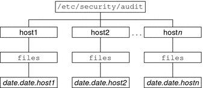
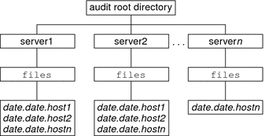

System Administration Guide: Security Services
|
|||
|
1. Security Services (Overview) Part II System, File, and Device Security 2. Managing Machine Security (Overview) 3. Controlling Access to Systems (Tasks) 4. Virus Scanning Service (Tasks) 5. Controlling Access to Devices (Tasks) 6. Using the Basic Audit Reporting Tool (Tasks) 7. Controlling Access to Files (Tasks) Part III Roles, Rights Profiles, and Privileges 8. Using Roles and Privileges (Overview) 9. Using Role-Based Access Control (Tasks) 10. Role-Based Access Control (Reference) Part IV Solaris Cryptographic Services 13. Solaris Cryptographic Framework (Overview) 14. Solaris Cryptographic Framework (Tasks) 15. Solaris Key Management Framework Part V Authentication Services and Secure Communication 16. Using Authentication Services (Tasks) 19. Using Solaris Secure Shell (Tasks) 20. Solaris Secure Shell (Reference) 21. Introduction to the Kerberos Service 22. Planning for the Kerberos Service 23. Configuring the Kerberos Service (Tasks) 24. Kerberos Error Messages and Troubleshooting 25. Administering Kerberos Principals and Policies (Tasks) 26. Using Kerberos Applications (Tasks) 27. The Kerberos Service (Reference) 28. Solaris Auditing (Overview) 29. Planning for Solaris Auditing 30. Managing Solaris Auditing (Tasks) 31. Solaris Auditing (Reference) Files Used in the Auditing Service Rights Profiles for Administering Auditing |
Audit CommandsThis section provides information about the following commands: auditd DaemonThe following list summarizes what the auditd daemon does.
The auditd daemon can be started automatically when the system is brought up to multiuser mode. Or, you can start the daemon from the command line. When the auditd daemon is started, it calculates the amount of free space necessary for audit files. The auditd daemon uses the list of audit directories in the audit_control file as possible locations for creating audit files. The daemon maintains a pointer into this list of directories, starting with the first directory. Every time the auditd daemon needs to create an audit file, the daemon puts the file into the first available directory in the list. The list starts at the auditd daemon's current pointer. You can reset the pointer to the beginning of the list by running the audit -s command. The audit -n command instructs the daemon to switch to a new audit file. The new file is created in the same directory as the current file. audit CommandThe audit command controls the actions of the auditd daemon. The audit command can do the following tasks:
For a discussion of the available options, see the audit(1M) man page. bsmrecord CommandThe bsmrecord command displays the format of audit events that are defined in the /etc/security/audit_event file. The output includes the event's audit ID, audit class, audit flag, and the record's audit tokens in order. With no option, the bsmrecord output displays in a terminal window. With the -h option, the output is suitable for viewing in a browser. For examples of the use of the bsmrecord command, see How to Display Audit Record Formats. Also, see the bsmrecord(1M) man page. auditreduce CommandThe auditreduce command summarizes audit records that are stored in binary format. The command can merge audit records from one or more input audit files. The command can also be used to perform a post selection of audit records. The records remain in binary format. To merge the entire audit trail, run this command on the audit server. The audit server is the system that mounts all the audit file systems for the installation. For more information, see the auditreduce(1M) man page. The auditreduce command enables you to track all audited actions on multiple systems from a single location. The command can read the logical combination of all audit files as a single audit trail. You must identically configure all systems at a site for auditing, and create servers and local directories for the audit files. The auditreduce command ignores how the records were generated or where the records are stored. Without options, the auditreduce command merges audit records from all the audit files in all of the subdirectories in the audit root directory. Typically, /etc/security/audit is the audit root directory. The auditreduce command sends the merged results to standard output. You can also place the results into a single, chronologically ordered output file. The file contains binary data. The auditreduce command can also select particular types of records for analysis. The merging functions and selecting functions of the auditreduce command are logically independent. The auditreduce command captures data from the input files as the records are read, before the files are merged and then written to disk. By specifying options to the auditreduce command, you can also do the following:
With no arguments, the auditreduce command checks the subdirectories within the /etc/security/audit directory, the default audit root directory. The command checks for a files directory in which the start-time.end-time.hostname files reside. The auditreduce command is very useful when audit data resides in separate directories. Figure 31-1 illustrates audit data in separate directories for different hosts. Figure 31-2 illustrates audit data in separate directories for different audit servers. Figure 31-1 Audit Trail Storage Sorted by HostFigure 31-2 Audit Trail Storage Sorted by ServerIf the partition for the /etc/security/audit directory is very small, you might not store audit data in the default directory. You can pass the auditreduce command another directory by using the -R option: # auditreduce -R /var/audit-alt You can also specify a particular subdirectory by using the -S option: # auditreduce -S /var/audit-alt/host1 For other options and more examples, see the auditreduce(1M) man page. praudit CommandThe praudit command makes the binary output of the auditreduce command readable. The praudit command reads audit records in binary format from standard input and displays the records in a presentable format. The input can be piped from the auditreduce command or from a single audit file. Input can also be produced with the cat command to concatenate several files, or the tail command for a current audit file. The praudit command can generate four output formats. A fifth option, -l (long), prints one audit record per line of output. The default is to place one audit token per line of output. The -d option changes the delimiter that is used between token fields and between tokens. The default delimiter is a comma.
In the default output format of the praudit command, each record is easily identified as a sequence of audit tokens. Each token is presented on a separate line. Each record begins with a header token. You could, for example, further process the output with the awk command. Here is the output from the praudit -l command for a header token: header,173,2,settppriv(2),,example1,2003-10-13 13:46:02.174 -07:00 Here is the output from the praudit -r command for the same header token: 121,173,2,289,0x0000,192.168.86.166,1066077962,174352445 Example 31-1 Processing praudit Output With a ScriptYou might want to process output from the praudit command as lines of text. For example, you might want to select records that the auditreduce command cannot select. You can use a simple shell script to process the output of the praudit command. The following simple example script puts one audit record on one line, searches for a user-specified string, then returns the audit file to its original form. #!/bin/sh # ## This script takes an argument of a user-specified string. # The sed command prefixes the header tokens with Control-A # The first tr command puts the audit tokens for one record # onto one line while preserving the line breaks as Control-A # praudit | sed -e '1,2d' -e '$s/^file.*$//' -e 's/^header/^aheader/' \\ | tr '\\012\\001' '\\002\\012' \\ | grep "$1" \\ Finds the user-specified string | tr '\\002' '\\012' Restores the original newline breaks Note that the ^a in the script is Control-A, not the two characters ^ and a. The prefix distinguishes the header token from the string header that might appear as text. auditconfig CommandThe auditconfig command provides a command-line interface to retrieve and set audit configuration parameters. The auditconfig command can do the following tasks:
For a discussion of the command options, see the auditconfig(1M) man page. |
||
|